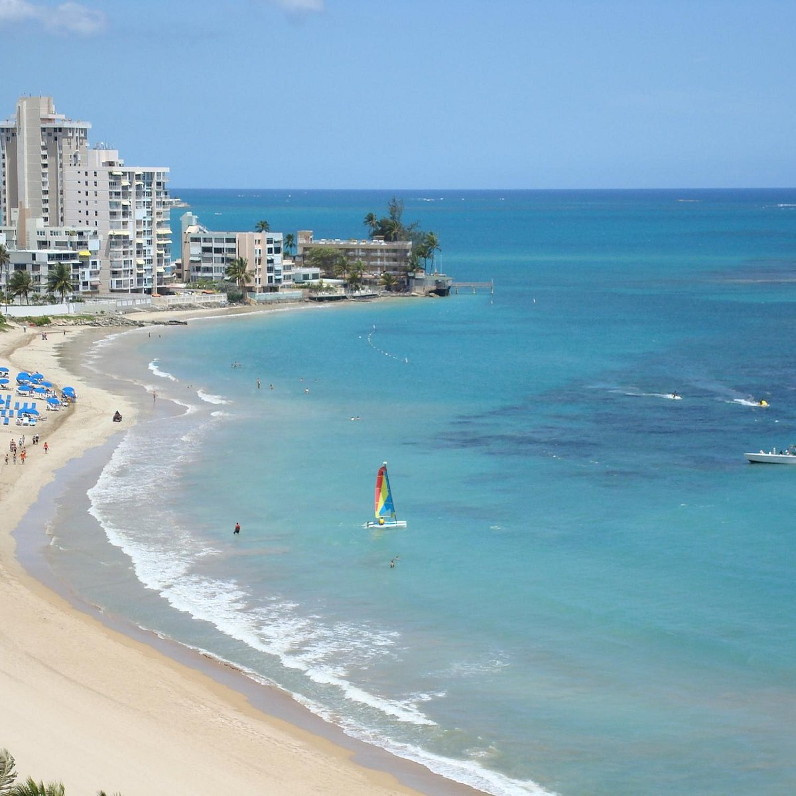

This ranking is based on three things: how accessible it is to reach and the quality of the beach itself like currents and waves
Here is the list of my top beaches on the island as a local.
Number 10: Condado Beach
Condado Beach is one of the most visited beaches in the island due to its proximity to the major hotel chains in San Juan. This beach is ranked at the bottom due to its horrible ocean conditions. This beach is known as the "tourist killer" by locals due to the high currents and waves that the majority of tourists choose to ignore warnings and dive in and then drown. However, due to its closeness to major hotels it is very accessible by foot and in good maritime weather very nice for the family!
Number 9: Escambrón Beach
Number 8:
Number 7:
Number 6: Playa Sucia
Number 6: Seven Seas Beach
Number 5: Balneario de Loíza
Number 4: Isla Verde Beach
Number 3: Crashboat Beach
Crashboat is one of the most beloved beach on the island for locals and tourists staying on the west side of the island. This beach used to be a pier for the U.S. military, but with time tons of sand moved into the area which created the beach. Now, it's largest attraction is to jump from the ruins into the water! This beach has low currents and waves perfect for a relaxing stay. It is very accesible by foot, but parking can be very tricky if you don't arrive early.
Number 2: Escambrón Beach
Number 1: Playa Escondida
Click here for the Puerto Rico's government tourism website!
A good resource for other beaches to go check out!